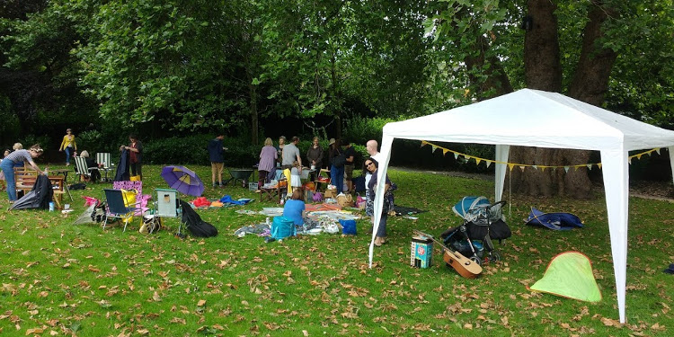

History
Brookmill Park was originally a small recreation ground opened around 1880. Minor extensions and improvements were made in the 1930s. The park was further extended following bomb damage to the area during World War II. The enlarged park was opened in 1953 to celebrate the Coronation of Queen Elizabeth II and the name Ravensbourne Park can still be seen today in ironwork over the main entrance. With the creation of the London Borough of Lewisham in the 1970s the park was renamed Brookmill Park to avoid confusion with the Ravensbourne Park Gardens and to reflect the once present silk mills of the industrial past.
Today Brookmill Park has a wide range of features to enjoy, including an ornamental garden, lake, children’s play area, and a naturalised stretch of the River Ravensbourne. The river meanders through the park and has been designed to include gently sloping edges that flood at high tide and gravelly river bed that benefits many aquatic plants and animals. Eels, Flounders, Sticklebacks, and other fish find food and shelter here, and in turn provide a meal for Kingfishers, whilst Grey Wagtails forage for insects along the water’s edge.
Please post your story to brookmillparkranger@deptfordcreek.net